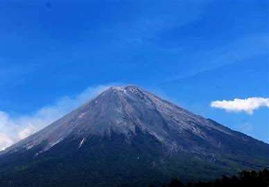

Gunung Semeru atau Gunung Meru adalah sebuah gunung berapi kerucut di Jawa Timur, Indonesia. Gunung Semeru merupakan gunung tertinggi di Pulau Jawa, dengan puncaknya Mahameru, 3.676 meter dari permukaan laut (mdpl). Gunung ini terbentuk akibat subduksi Lempeng Indo-Australia kebawah Lempeng Eurasia. Gunung Semeru juga merupakan gunung berapi tertinggi ketiga di Indonesia setelah Gunung Kerinci di Sumatra dan Gunung Rinjani di Nusa Tenggara Barat. Kawah di puncak Gunung Semeru dikenal dengan nama Jonggring Saloko.
Gunung Semeru secara administratif termasuk dalam wilayah dua kabupaten, yakni Kabupaten Malang dan Kabupaten Lumajang, Provinsi Jawa Timur. Gunung ini termasuk dalam kawasan Taman Nasional Bromo Tengger Semeru. Semeru mempunyai kawasan hutan Dipterokarp Bukit, hutan Dipterokarp Atas, hutan Montane, dan Hutan Ericaceous atau hutan gunung. Posisi geografis Semeru terletak antara 8°06' LS dan 112°55' BT. Pada tahun 1913 dan 1946 Kawah Jonggring Saloka memiliki kubah dengan ketinggian 3.744,8 m hingga akhir November 1973. Di sebelah selatan, kubah ini mendobrak tepi kawah menyebabkan aliran lava mengarah ke sisi selatan meliputi daerah Pronojiwo dan Candipuro di Lumajang.